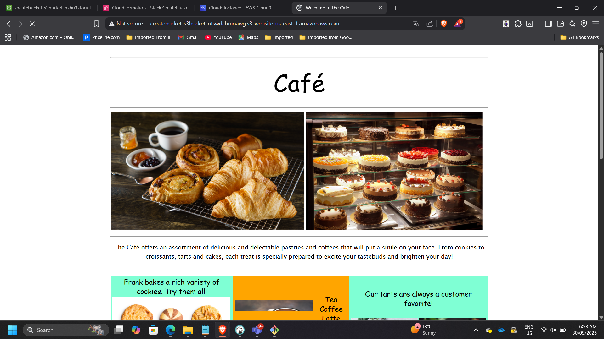
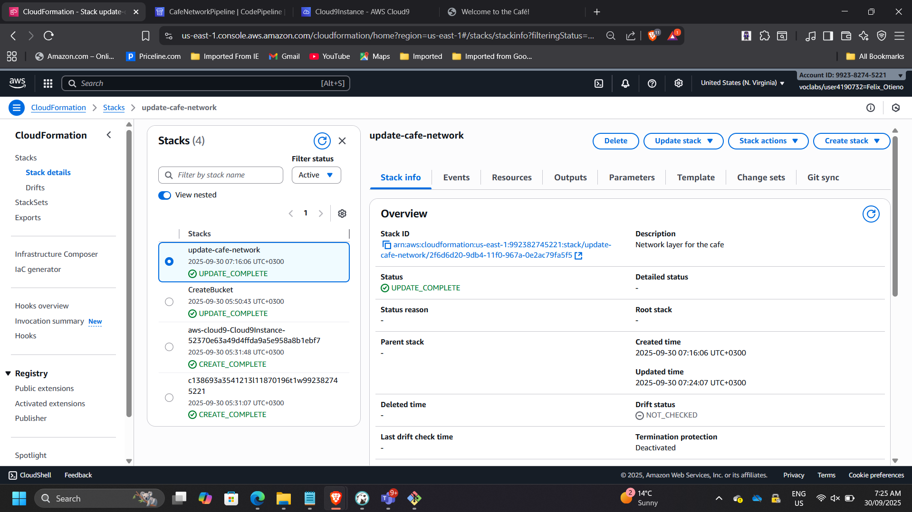
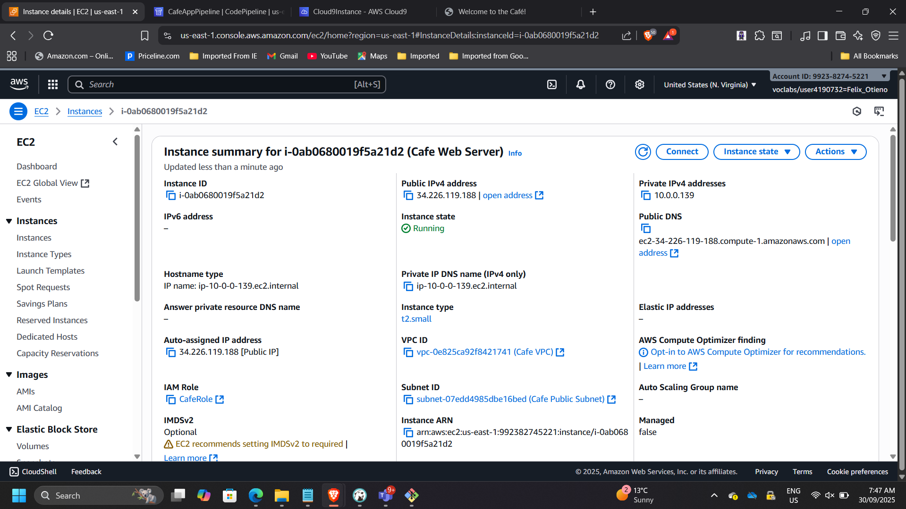
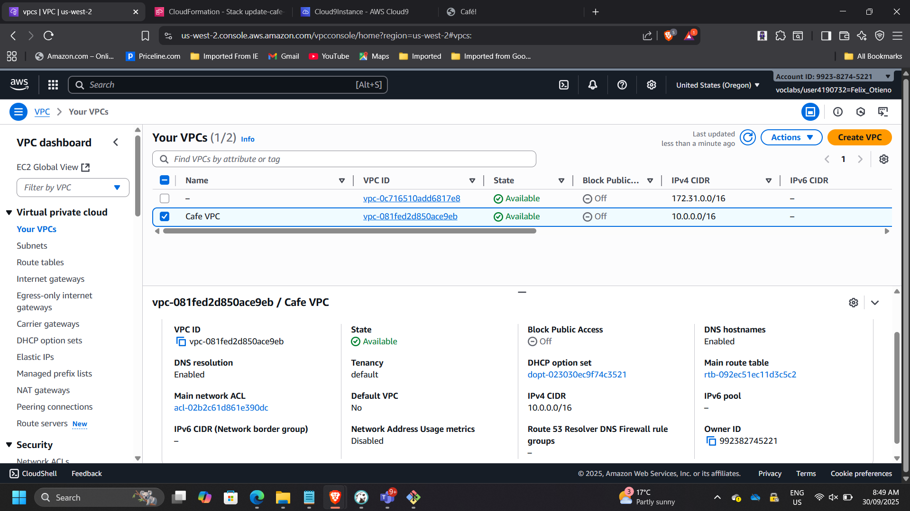
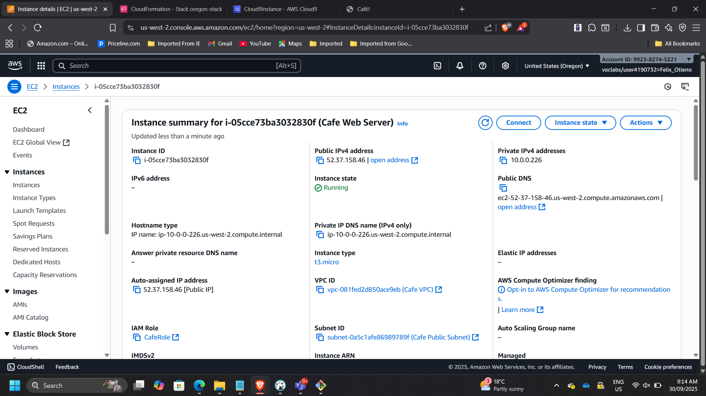

Designing an Infrastructure-as-Code CI/CD Deployment Pipeline on AWS
Project: CI/CD-Driven Infrastructure Automation with AWS CloudFormation
Timeline: September 2025
Role: Solutions Architect (Infrastructure Automation & Platform Engineering)
Skills: AWS CloudFormation, AWS CodeCommit, AWS CodePipeline, Git, Multi-Region Deployment, VPC Architecture, EC2, S3 Static Hosting
Executive Summary
Designed and implemented a Git-driven Infrastructure-as-Code (IaC) deployment pipeline using AWS CloudFormation, CodeCommit, and CodePipeline.
The solution enables:
- Version-controlled infrastructure templates
- Automated stack creation and updates
- Modular networking and application layers
- Static and dynamic website deployment
- Multi-region infrastructure replication
This architecture reflects enterprise DevOps and platform engineering practices where infrastructure updates are governed through CI/CD rather than manual configuration.
Architecture Overview
The solution consists of:
- Source Control: AWS CodeCommit repository
- CI/CD Engine: AWS CodePipeline
- Infrastructure Definition: AWS CloudFormation templates
- Static Website Layer: Amazon S3
- Network Layer: Custom VPC & public subnet
- Application Layer: EC2 (Apache, MariaDB, PHP)
- Multi-Region Deployment: us-east-1 & us-west-2

Phase 1 – Creating Infrastructure from Scratch (S3 Website)
Created S3.yaml CloudFormation template defining:
- Amazon S3 bucket
- Static website configuration
- Outputs (website URL)
- DeletionPolicy: Retain
Deployed using AWS CLI in Cloud9.
📸 Cloud9 IDE – S3.yaml Template

📸 CLI Stack Creation Output

📸 CloudFormation – CREATE_COMPLETE

📸 S3 Static Website Running 
This phase demonstrates foundational Infrastructure-as-Code implementation.
Phase 2 – Introducing Version Control with CodeCommit
Cloned CFTemplatesRepo into Cloud9 and established Git workflow:
- git clone
- git add
- git commit
- git push
📸 CodeCommit Repository Overview

📸 Git Commit & Push in Cloud9

This introduced:
- Infrastructure versioning
- Auditability
- Change tracking
Phase 3 – CI/CD-Driven Network Layer Deployment
Created cafe-network.yaml defining:
- VPC
- Public Subnet
- Route Tables
- Internet Gateway
Committed to CodeCommit.
CodePipeline automatically:
- Detected commit
- Triggered pipeline
- Deployed CloudFormation stack
📸 CodePipeline Execution Graph

📸 CloudFormation Stack – CREATE_COMPLETE

📸 VPC Console – Cafe VPC

This demonstrates automated environment provisioning.
Phase 4 – Controlled Infrastructure Update
Enhanced network template to export:
- VPC ID
- Subnet ID
Pushed update to repository.
Pipeline triggered stack UPDATE.
📸 CloudFormation Change Complete 
📸 Outputs Showing Exported Values

This validates controlled infrastructure evolution through CI/CD.
Phase 5 – Application Layer Automation
Created cafe-app.yaml defining:
- EC2 instance
- Security Group
- UserData installing:
- Apache
- MariaDB
- PHP
- Dynamic café website
Committed to CodeCommit.
Pipeline CafeAppPipeline deployed automatically.
📸 CodePipeline – Application Deployment

📸 EC2 Instance Running 
📸 Dynamic Café Website

This phase demonstrates automated full-stack provisioning.
Phase 6 – Multi-Region Infrastructure Replication
Duplicated network and application stacks into us-west-2 (Oregon).
Steps:
- CloudFormation CLI deployment
- New key pair creation
- Application stack launch
- Instance type adjustment
📸 CLI Stack Creation – us-west-2

📸 VPC Console – Oregon Region 
📸 EC2 in Oregon Running 
📸 Website Running in Oregon

This demonstrates:
- Infrastructure portability
- Regional scalability
- Reproducible environments
Architectural Outcomes
Git-Based Infrastructure Governance
All infrastructure changes are version-controlled.
CI/CD-Driven Stack Management
No manual console provisioning required.
Modular Stack Separation
Network and application layers decoupled.
Cross-Region Scalability
Infrastructure deployable in multiple AWS Regions.
Reduced Configuration Drift
Environment state controlled via template definitions.
Enterprise Impact
This project elevates Infrastructure-as-Code from basic template usage to:
- Platform engineering practice
- CI/CD-integrated deployment model
- Governed infrastructure lifecycle
- Multi-region operational readiness
It reflects how modern cloud platforms are built in enterprise environments.
Conclusion
Successfully implemented a CI/CD-driven Infrastructure-as-Code pipeline using AWS CloudFormation, CodeCommit, and CodePipeline.
The solution demonstrates automation maturity, operational governance, and scalable environment replication — core competencies expected of modern cloud architects and platform engineers.